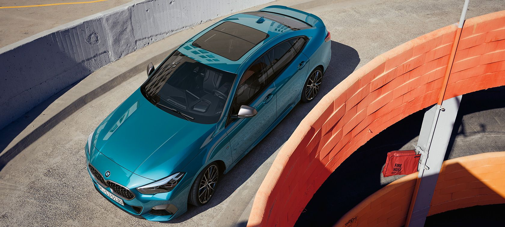
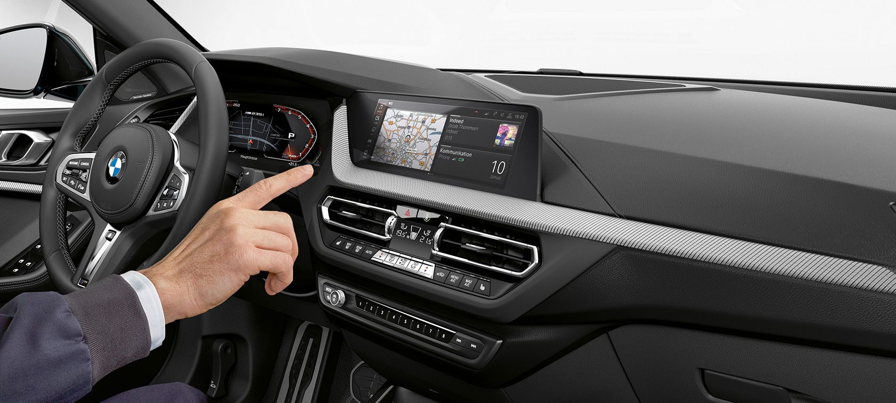

|
||||
| Motor ve Yakıt Tipi | Güç | 0-100KM | ||
| BENZİN - DİZEL | 140 bg | h:8.7 sn | ||
|
BMW 2 Serisi Gran Coupé, kompakt sınıfa cesur bir karaktere sahip yepyeni bir otorite kazandırıyor. İddiasını gözler önüne seren en önemli şey ise tavizsiz ve performans odaklı estetiği. Bu otomobil şık olmak yerine ölçüsüzlüğü, geleneksel olanın yerine bireyselliği ve sıradan olanın yerine olağanüstü olmayı tercih ediyor. Yüksek teknolojisi ve kusursuz sürüş dinamikleri sayesinde BMW 218i Gran Coupé ve BMW 216d Gran Coupé diğerlerinden kolaylıkla ayrılıyor ve kendi yolunu çiziyor. |
BMW 2 SERİSİ GRAN COUPÉ’NİN TASARIMI.
BMW 2 Serisi Gran Coupé’nin dış ve iç tasarımının üst düzey özellikleri.
BMW 2 Serisi Gran Coupé; ayırt edici BMW Böbrek Izgaraları, LED farlar ve stop lambaları, çerçevesiz kapıları, güçlü
omuzları ve sportif arka bölümü ile iç tasarıma da yansıyan gerçek gücü ifade ediyor. Işıklı iç kaplamalar ve opsiyonel spor
koltuklarla birlikte sürücü odaklı kokpit, aynı oranda ayrıcalık ve dinamizm sunan bir ortam oluşturuyor. Aynı zamanda
standart olarak sunulan BMW Live Cockpit Professional 10,25 inç boyutunda bilgi ekranı ve 10,25 inç boyutunda kontrol
paneli ekranı ile dijital bir deneyim sunuyor.


SÜRÜŞ DİNAMİKLERİ.
BMW 2 Serisi Gran Coupé’nin motor, hareketli aksam ve yürüyen aksam teknolojileri.
Çift kavramalı otomatik vites ile BMW 2 Serisi Gran Coupé bu segmentte çeviklik açısından da öncü. Karakteristik BMW
sürüş dinamiklerini temsil eden güçlü ve son derece verimli BMW TwinPower Turbo benzinli ve dizel motor seçenekleriyle
birlikte diğer modeller arasından kolaylıkla sıyrılıyor ve her rotada kendinden emin, olağanüstü bir tavır ortaya koyuyor.
DESTEK SİSTEMLERİ VE KONFOR FONKSİYONLARI.
BMW 2 Serisi Gran Coupé’deki yenilikçi sürücü destek sistemleri ve teknoloji özelikleri.
BMW 2 Serisi Gran Coupé en ince detayına kadar teknik açıdan ileri bir görünüm sergiliyor. Şerit Takip Sistemi ve şehir içi
fren foksiyonuna sahip Sürüş Asistanı, Otomatik Park ve Geri Sürüş Asistanı'nı kapsayan Park Asistanı gibi yenilikçi
sürücü destek sistemleri sizi yolculuğunuz sırasında desteklerken, tamamen sürücü odaklı kokpitiyle sürücü ve otomobil
arasındaki iletişimi bir sonraki seviyeye taşıyor.
